2026-05-30
| Параметр | Значение |
|---|---|
| Объём | 1 159 764 трека |
| Уникальных артистов | 64 158 |
| Уникальных жанров | 82 |
| Временной охват | 2000 - 2023 гг. |
| Признаков | 13 числовых аудио-характеристик и 2 категориальные фичи |
Аудио-признаки: danceability, energy, key, loudness, mode, speechiness, acousticness, instrumentalness, liveness, valence, tempo, duration_ms, time_signature.
Категориальные-признаки: artist_name, genre
| Слой | Инструменты |
|---|---|
| Язык | Python 3.12 |
| Управление зависимостями | uv |
| Классические ML | scikit-learn, XGBoost, CatBoost, LightGBM |
| Временные ряды | statsmodels (Holt, SARIMAX) |
| Кластеризация | MiniBatchKMeans, UMAP |
| Объяснимость | SHAP |
| Визуализация | matplotlib, seaborn, plotly |
| Ускорение | CUDA GPU для CatBoost и LightGBM |
В конце сводные выводы и рекомендации.
Гипотеза: пользователи воспринимают музыку не столько по жанрам, сколько по эмоциональному профилю.
Цель: обнаружить типы треков по настроению пользователей во время прослушивания через кластеризацию аудио-характеристик
Почему это важно:
Выбор признаков - 9 из 13 аудио-характеристик:
danceability, energy, loudness, speechiness, acousticness, instrumentalness, liveness, valence, tempo.
Исключены: key, mode, time_signature - они относятся к теории музыки, а не к эмоциональному восприятию.
Препроцессинг:
StandardScaler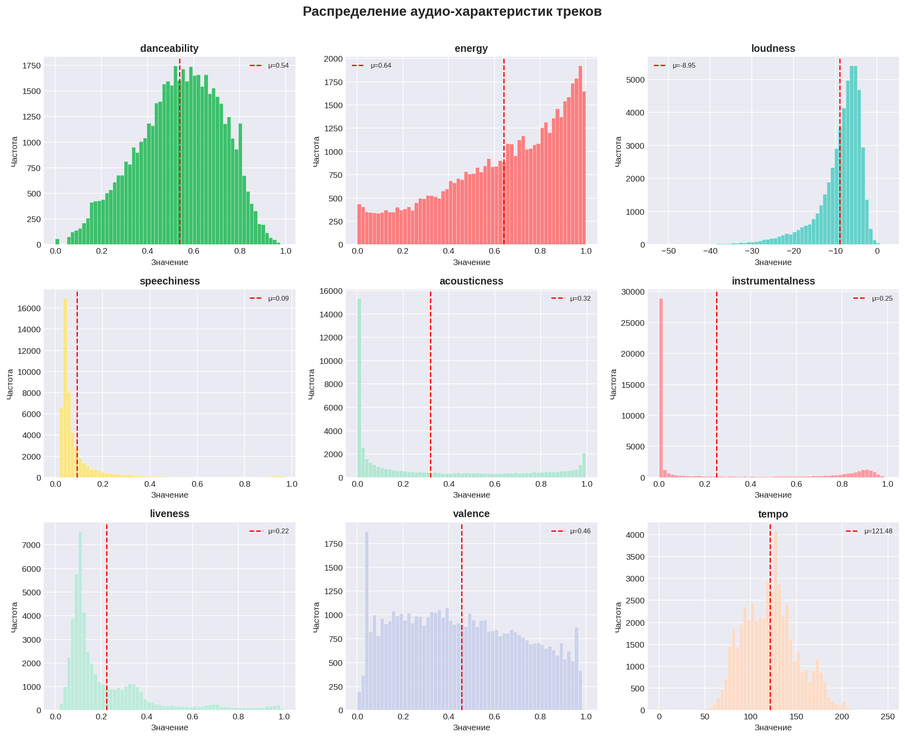
9 гистограмм показывают, что распределения сильно различаются: acousticness и instrumentalness бимодальны с тяжелыми хвостами по краям распределений, valence и danceability ближе к нормальному. speechless, loadness и liveness асиметричны
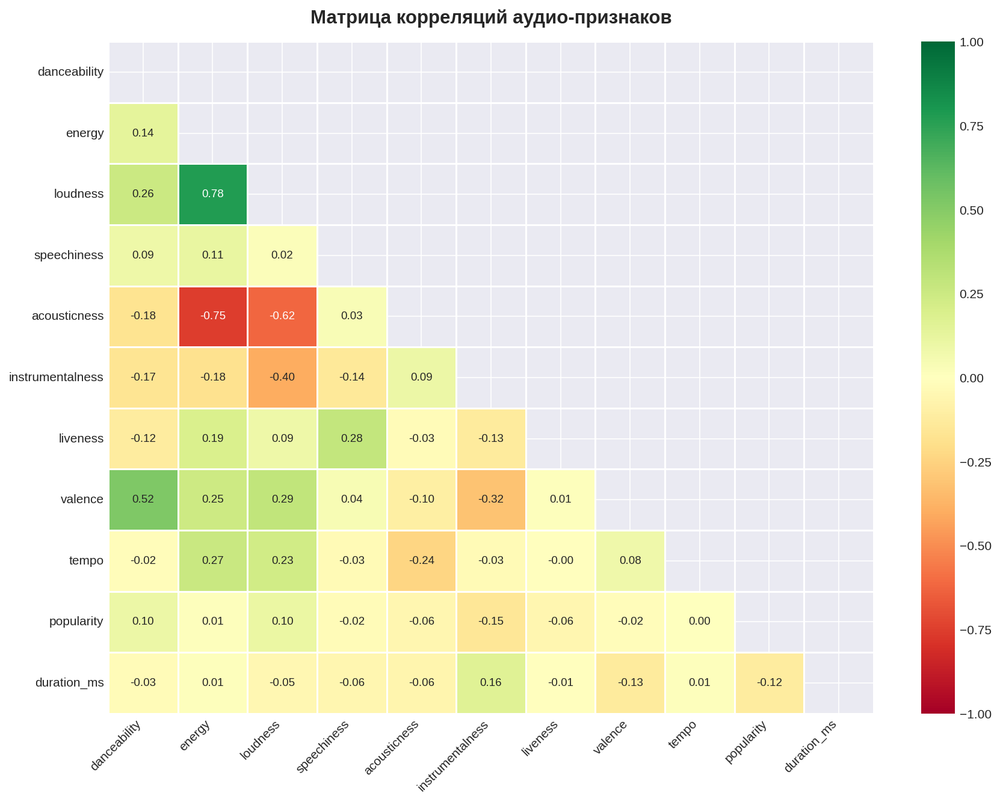
Ключевые наблюдения:
energy и loudness сильно скоррелированы (0.78) - оба отражают громкость и плотностьacousticness отрицательно коррелирует с energy (-0.7) - ожидаемоvalence слабо связан со всеми остальными признаками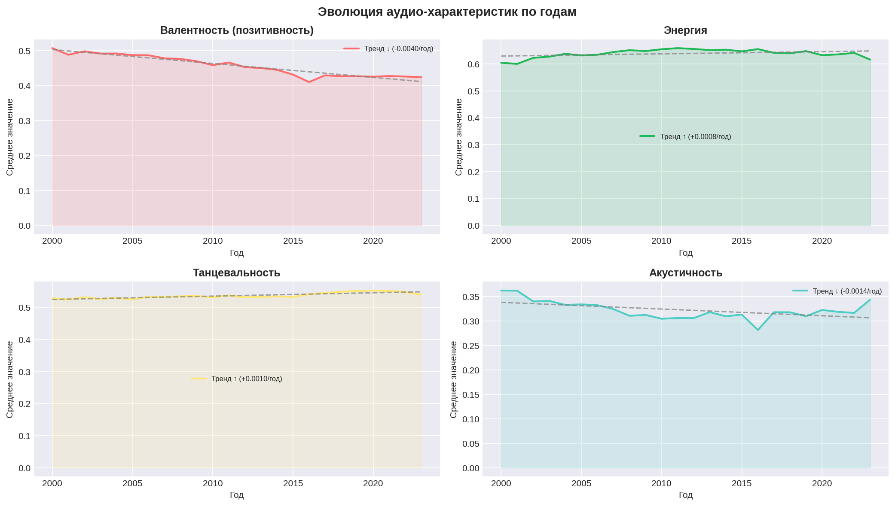
Наблюдения:
valence снижается с примерно 0.50 до чуть больше 0.4 за 23 года выборки \(\Rightarrow\) музыка становится грустнееenergy стабиленacousticness постепенно растётdanceability тоже постепенно растет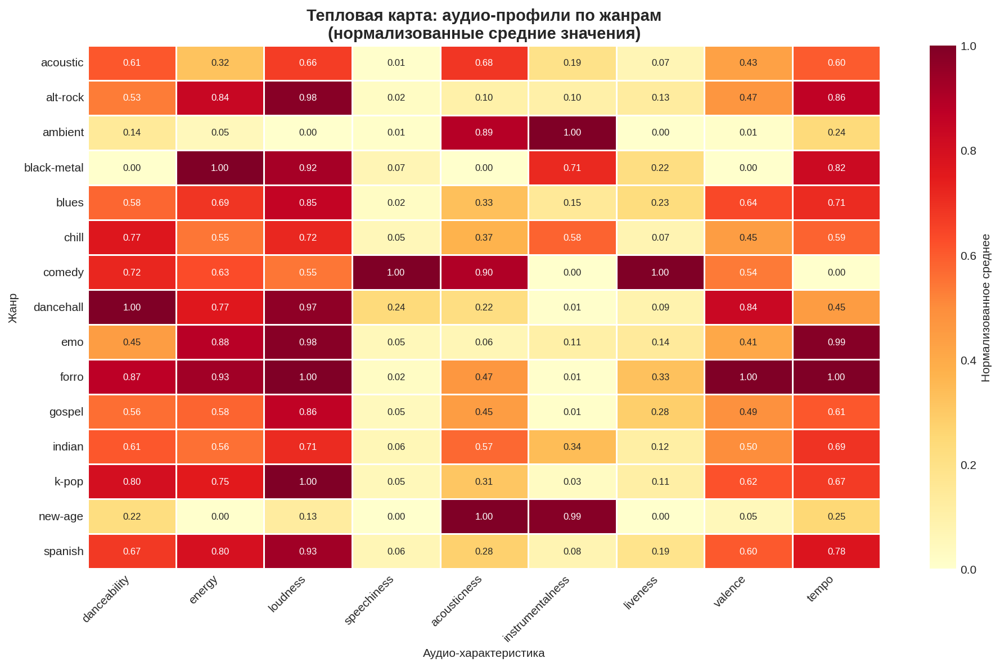
Тепловая карта по топ-15 жанрам и 9 признакам - видно, что наиболее популярные жанры сильно похожи по аудио-профилю
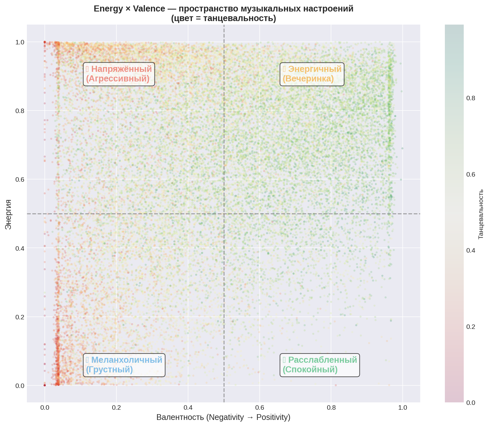
Четыре эмоциональных квадранта на проекции 30 000 треков (цвет = danceability):
| Квадрант | Энергия | Валентность | Настроение |
|---|---|---|---|
| верхний правый | высокая | высокая | Party / Энергия |
| нижний правый | низкая | высокая | Calm / Relax |
| верхний левый | высокая | низкая | Intense / Dark |
| нижний левый | низкая | низкая | Melancholy |
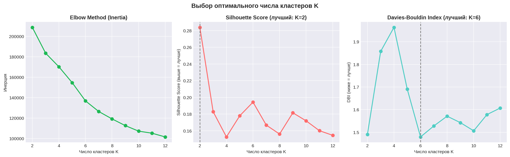
Три согласованных метрики на выборке 30 000:
| Метрика | Оптимум | Значение |
|---|---|---|
| Silhouette Score | K = 6 | 0.1943 |
| Davies-Bouldin Index | K = 6 | 1.4794 |
| Метод локтя | K \(\approx\) 6 - 8 | излом на графике |
Финальный выбор: K = 7 - компромисс между статистическим оптимумом и интерпретируемостью для бизнеса
| Гиперпараметр | Значение |
|---|---|
n_clusters |
7 |
n_init |
15 |
batch_size |
8 192 |
max_iter |
300 |
Почему MiniBatch: 1.1 млн объектов - классический K-Means слишком медленный, мини-батч даёт сильно быстрее, и при этом качество не сильно падает из-за репрезентативности мини-батча
| # | Архетип | Треков | Доля | Energy | Valence |
|---|---|---|---|---|---|
| 0 | Интенсивный / Тёмный | 189 235 | 16.6 % | 0.85 | 0.27 |
| 1 | Тренировка / Мотивация | 141 739 | 12.5 % | 0.77 | 0.54 |
| 2 | Акустика / Уют | 179 494 | 15.8 % | 0.36 | 0.39 |
| 3 | Смешанный / Нейтральный | 74 308 | 6.5 % | 0.72 | 0.48 |
| 4 | Ритмичный / Позитивный | 284 568 | 25.0 % | 0.73 | 0.71 |
| 5 | Инструментальный / Фокус | 157 891 | 13.9 % | 0.73 | 0.42 |
| 6 | Ambient / Lo-Fi | 109 455 | 9.6 % | 0.17 | 0.20 |
Самый крупный кластер - Ритмичный / Позитивный (четверть всего каталога).
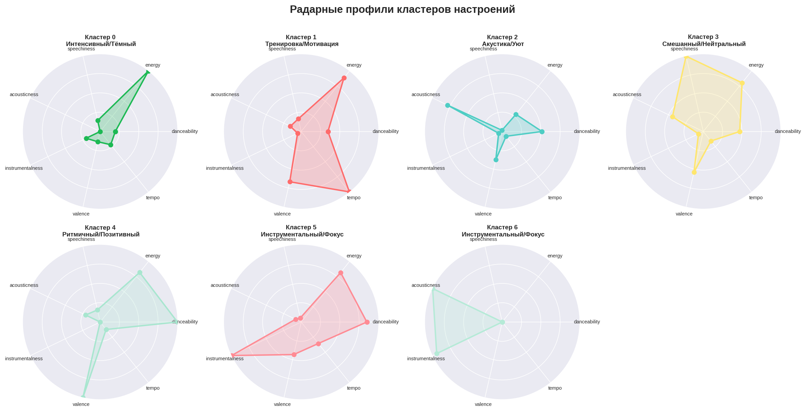
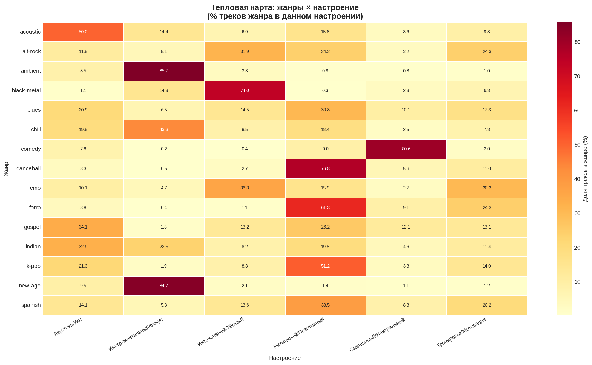
Вывод: один жанр распределяется по 4-5 кластерам настроения. Например, pop живёт почти везде, rock концентрируется в Dark/Intense, электроника - в Instrumental/Focus.
Таким образом, жанр не является хорошим прокси настроения.
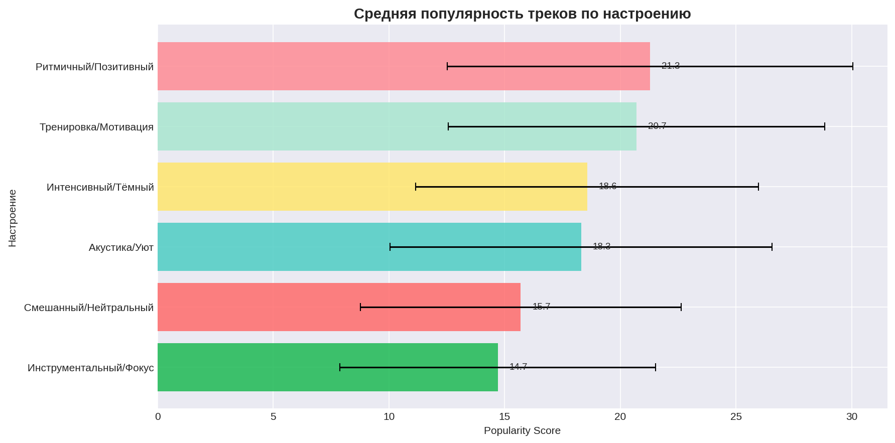
valence падает с 0.50 до 0.43Цель: предсказать popularity трека (0 - 100) и классифицировать его как хит (popularity >= 70) на основе аудио-характеристик и метаданных.
Главная проблема: сильный дисбаланс классов - хитов всего \(\approx\) 0.3 % от всех треков.
| Параметр | Значение |
|---|---|
| Объём тренировки | 811 234 |
| Объём теста | 348 530 |
| True hits в тесте | \(\approx\) 1 039 |
| Доля хитов | 0.3 % |
| Целевой порог | popularity \(\geq\) 70 |
Класс HitPrediction - единый интерфейс над разными имплементациями ML моделей
┌──────────────────────────────┐
X -> │ HitPrediction │ -> predict_popularity (log-prob)
│ ───────────────────────── │ -> predict_hit (0/1)
│ • деление cat/num │ -> evaluate (F1, ROC-AUC, CM)
│ • LabelEncoder для sklearn │
│ • native cat features в CB │
│ • MODEL_FACTORY: 3 модели │
└──────────────────────────────┘
│
┌──────────┼──────────┐
▼ ▼ ▼
CatBoost XGBoost LinearRegressionКонфиги моделей вынесены в task_2/mappings.py.
CatBoost:
XGBoost:
LinearRegression - бейзлайн
Бинаризация: predict_hit = (predict_popularity $\geq$ hit_border), по умолчанию hit_border = 70.
| Модель | F1 (hit) | ROC-AUC | Время обучения | TP | FP |
|---|---|---|---|---|---|
| LinearRegression | 0.0000 | 0.8251 | 1.2 c | 0 | 0 |
| CatBoost | 0.0038 | 0.9482 | 79.8 c | 2 | 5 |
| XGBoost | 0.0188 | 0.9513 | 13.8 c | 10 | 13 |
XGBoost выигрывает по ROC-AUC и F1 при пороге 70 и при этом существенно быстрее, чем CatBoost (при обучении и инференсе на CPU)
| Предсказано: не хит | Предсказано: хит | |
|---|---|---|
| Истина: не хит | 346 878 (TN) | 13 (FP) |
| Истина: хит | 1 029 (FN) | 10 (TP) |
Precision = 10 / 23 = 43.5 % - почти половина предсказанных хитов действительно хиты.
Recall = 10 / 1 039 = 0.96 % - но мы ловим меньше 1 % всех хитов.
hit_border до 50 - 60 для увеличения recallclass_weight="balanced" или SMOTE/undersamplingЦель: для каждого трека предсказать один из 82 жанров по 13 аудио-признакам.
Особенности задачи:
| Выборка | Размер | Процент |
|---|---|---|
| Train | 811 834 | 70 % |
| Val | 173 965 | 15 % |
| Test | 173 965 | 15 % |
Трейн-вал-тест сплит сделали через StratifiedShuffleSplit
X (13 признаков)
│
┌───┴─────────────────┐
▼ ▼
LightGBM CatBoost
(GPU, 300 итер) (GPU, 400 итер)
│ │
▼ ▼
P_lgbm (82) P_cb (82)
└────────┬────────────┘
▼
stacked (164 признака)
│
▼
Logistic Regression
(C=1.0, lbfgs, balanced)
│
▼
meta_proba (82)
│
▼
+ log-prior shift (per-class)
[grid [-2, +2], 21 точка, 2 прохода,
оптимизация macro-F1]
│
▼
final P (82) -> argmaxLightGBM:
CatBoost:
Обучается на валидации, не на трейне, чтобы не переобучиться под неоткалиброванные вероятности от бустингов
[-2, +2]| Модель | Macro F1 | Weighted F1 | Top-1 Acc | Top-3 Acc | Top-5 Acc |
|---|---|---|---|---|---|
| Single CatBoost (baseline) | 0.2350 | 0.2558 | 0.2756 | 0.4702 | 0.5725 |
| Base: LightGBM | 0.2575 | 0.2803 | 0.2947 | 0.4904 | 0.5922 |
| Base: CatBoost (ensemble) | 0.2292 | 0.2497 | 0.2705 | 0.4629 | 0.5652 |
| Ensemble (Raw) | 0.2575 | 0.2789 | 0.2843 | 0.4663 | 0.5643 |
| Ensemble (Calibrated) | 0.2648 | 0.2872 | 0.2843 | 0.4654 | 0.5618 |
Топ-10 жанров с наибольшим приростом F1 (Ensemble - Single CB):
| Жанр | Train count | Single F1 | Ensemble F1 | \(\Delta\) F1 |
|---|---|---|---|---|
| sad | 4 260 | 0.231 | 0.341 | +0.110 |
| hardstyle | 8 694 | 0.588 | 0.691 | +0.103 |
| groove | 9 356 | 0.074 | 0.158 | +0.084 |
| romance | 4 563 | 0.342 | 0.424 | +0.082 |
| spanish | 13 411 | 0.034 | 0.100 | +0.076 |
| party | 6 684 | 0.302 | 0.376 | +0.075 |
| tango | 10 548 | 0.578 | 0.653 | +0.074 |
| emo | 14 591 | 0.111 | 0.185 | +0.074 |
| deep-house | 12 527 | 0.239 | 0.312 | +0.073 |
| sleep | 12 496 | 0.588 | 0.654 | +0.067 |
| Жанр | Train count | Single F1 | Ensemble F1 | \(\Delta\) F1 |
|---|---|---|---|---|
| punk | 4 338 | 0.088 | 0.063 | -0.025 |
| metalcore | 4 387 | 0.144 | 0.124 | -0.021 |
| rock | 2 323 | 0.031 | 0.014 | -0.017 |
| power-pop | 12 013 | 0.251 | 0.235 | -0.016 |
| afrobeat | 8 677 | 0.191 | 0.184 | -0.007 |
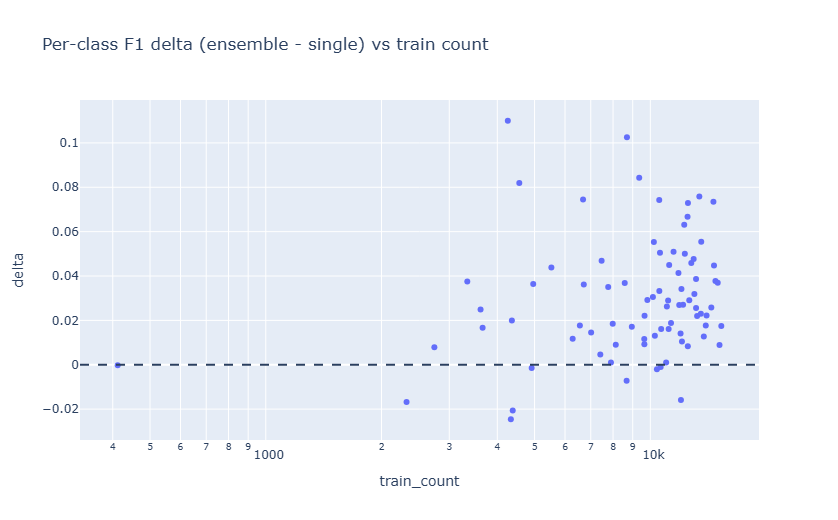
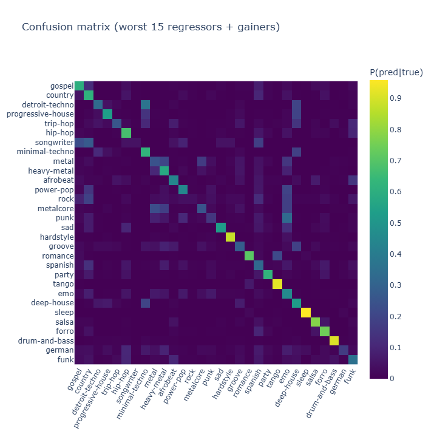
SHAP считался на 1500 случайно просемплированных треках:
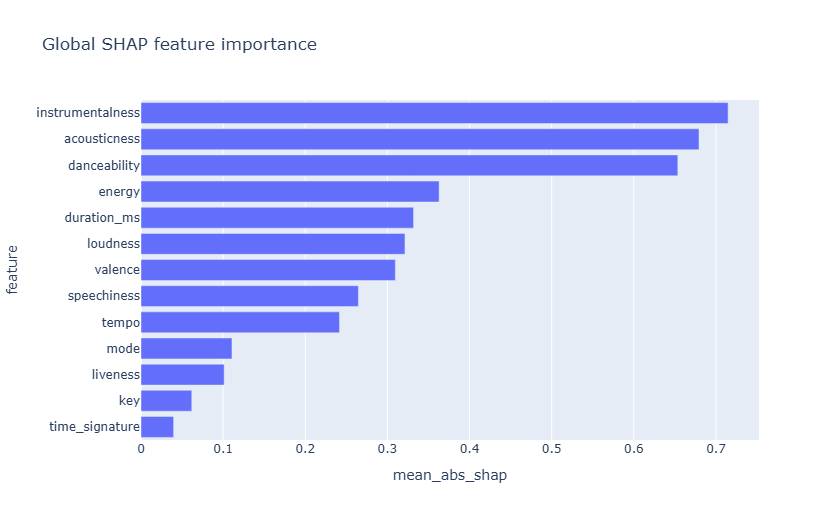
Главные признаки жанра - наличие вокала, акустичность, танцевальность. Темп и тональность почти не влияют на прогноз модели
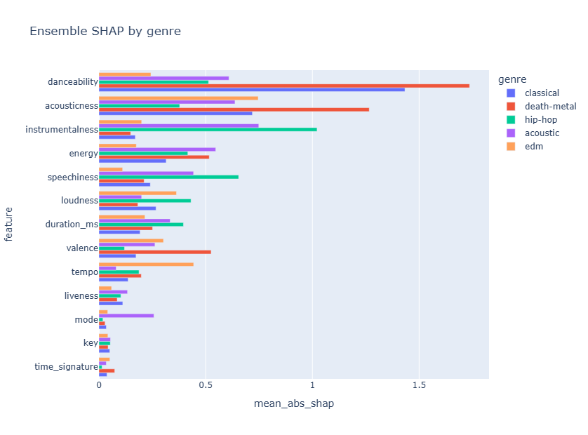
Разрез SHAP по 5 достаточно разным жанрам (classical, death-metal, hip-hop, acoustic, edm) показывает, что для каждого жанра доминируют разные признаки: acousticness ярко выделяет classical, speechiness - hip-hop, instrumentalness - acoustic.
| Вид бустинга | Доля влияния |
|---|---|
| LightGBM | 51.8 % |
| CatBoost | 48.2 % |
Бустинги вносят сопоставимый, но различающийся по жанрам вклад:
| Жанр | Предпочитает LGBM | Жанр | Предпочитает CatBoost |
|---|---|---|---|
| rock | 57.8 % | metalcore | 51.7 % |
| german | 57.0 % | sad | 51.5 % |
| edm | 55.9 % | sertanejo | 51.1 % |
| swedish | 55.5 % | minimal-techno | 51.0 % |
| k-pop | 54.1 % | club | 50.4 % |
\(\Rightarrow\) Стэкинг действительно улучшает прогноз базовых моделей (именно этого эффекта мы и хотели добиться)
Гипотеза: ML-курированные плейлисты (treatment) популярнее жанрово-курированных (control).
Сетап:
| Метрика | Control | Treatment | \(\Delta\) | p-value |
|---|---|---|---|---|
| Mean popularity | 18.73 | 17.11 | -1.62 | 0.083 |
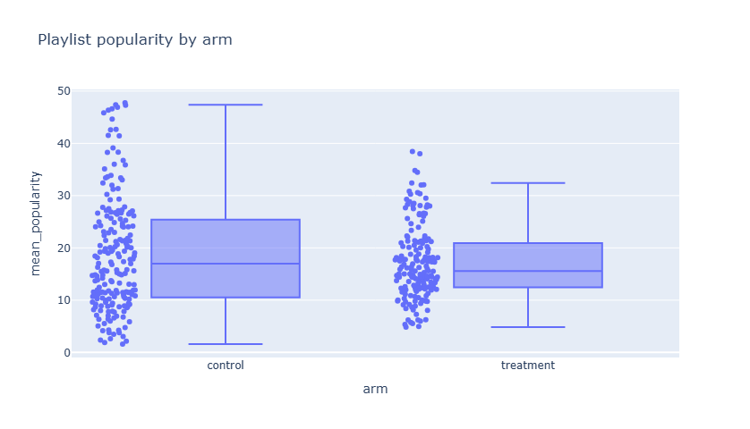
Результат - статистически не значим (p > 0.05). Treatment плейлисты чуть менее популярны (но в пределах шума).
Интерпретация: средняя популярность как прокси метрика \(-\) плохой выбор для оценки качества рекомендаций: она сильно зашумлёна и не отражает реальную пользу модели
Гипотеза: ML-рекомендации увеличивают долю дослушанных треков.
Симуляция:
\[logit = -0.4 + 0.9*match + 0.6*audio_sim + 0.25*pop_z + N(0, 0.1) *completion = sigmoid(logit)\]
Сетап: 2 000 пользователей по 4 на 25 треков
| KPI | Control (true genre) | Treatment (ML) | \(\Delta\) |
|---|---|---|---|
| Completion rate | 68.525 % | 70.875 % | +2.35 п.п. |
| z-statistic | - | - | 3.234 |
| p-value | - | - | 0.00122 |
| 95 % CI (bootstrap) | - | - | [0.97, 3.76] п.п. |
Эффект статистически значим (p < 0.005)
Цель: проанализировать долгосрочные тренды музыки и спрогнозировать их на 5 лет вперёд.
Два направления:
energy, danceability, valence, acousticness)Подход:
| Модель | Что моделирует | Параметры |
|---|---|---|
| Linear Regression | базовый линейный тренд | OLS, без сезонности |
| Exponential Smoothing | уровень + тренд (Holt) | без сезонной компоненты |
| SARIMAX (1, 1, 0) | AR(1) с дифференцированием | p=1, d=1, q=0, без экзогенных |
Метрики: MAE и RMSE на тесте 2019 - 2023.
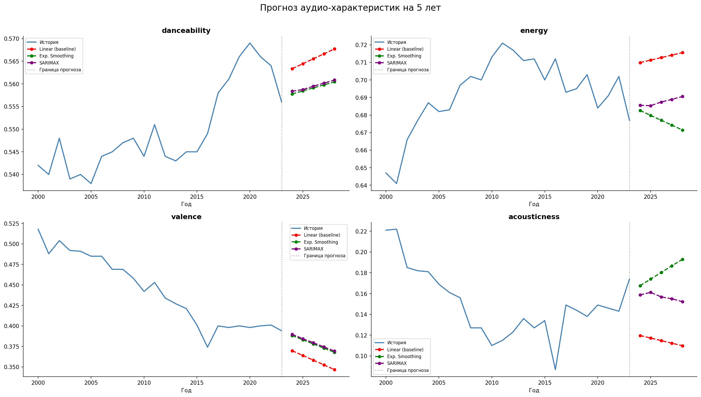
Четыре панели - danceability, energy, valence, acousticness. Тренды 2000 - 2023 + прогноз 2024 - 2028 от трёх моделей.
Направления трендов:
| Признак | Тренд | Интерпретация |
|---|---|---|
energy |
\(\uparrow\) | музыка становится плотнее |
danceability |
\(\uparrow\) | больше ритма |
loudness |
\(\uparrow\) | громче (loudness war) |
tempo |
\(\uparrow\) | темп растёт |
acousticness |
\(\downarrow\) | живой звук теряет долю |
instrumentalness |
\(\downarrow\) | вокал доминирует |
valence |
\(\approx\) стабилен | (с очень медленным снижением) |
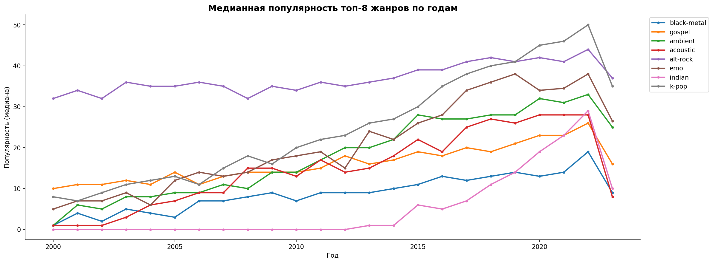
Анализируемые жанры: black-metal, gospel, ambient, acoustic, alt-rock, emo, indian, k-pop.
k-pop показывает взрывной рост в 2010-х; emo и alt-rock теряют долю; gospel и acoustic стабильны.
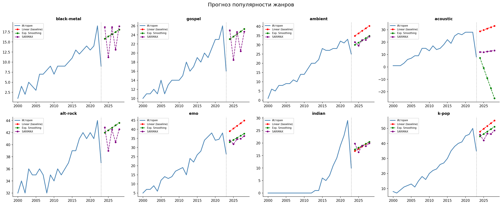
8 панелей (по одной на жанр), на каждой - три модели прогноза до 2028 года.
Прогнозы - направляющие, не абсолютные: SARIMAX и ExpSmoothing близки, LinearRegression сильно расходится на горизонте.
Усреднённый MAE по 4 ключевым аудио-признакам:
| Модель | Avg MAE | Avg RMSE |
|---|---|---|
| LinearRegression | 0.0343 | - |
| Exponential Smoothing | 0.0148 | - |
| SARIMAX (1, 1, 0) | 0.0148 | - |
Победители: Holt и SARIMAX (дают практически одинаковую точность), обе модели в 2.3 раза точнее простого линейного тренда.
Разбивка SARIMAX по признакам:
| Признак | MAE |
|---|---|
danceability |
0.0048 |
energy |
0.0139 |
acousticness |
0.0196 |
valence |
0.0210 |
Цель: для произвольного затравочного трека находить 5 похожих по аудио-характеристикам.
Ограничения:
Архитектура: контентная система на K-Nearest Neighbors.
| Параметр | Значение |
|---|---|
| Алгоритм | ball_tree (sklearn) |
| Метрика | L2 |
| Признаков | 9 аудио фичей |
| K | 20 кандидатов \(\rightarrow\) top-5 |
| Препроцессинг | StandardScaler |
запрос (название/артист)
│
▼
найти seed track в индексе
│
▼
ball_tree -> 20 ближайших (без самого себя)
│
▼
similarity = (1 - dist / dist_max) * 100 %
│
▼
sort & take top-5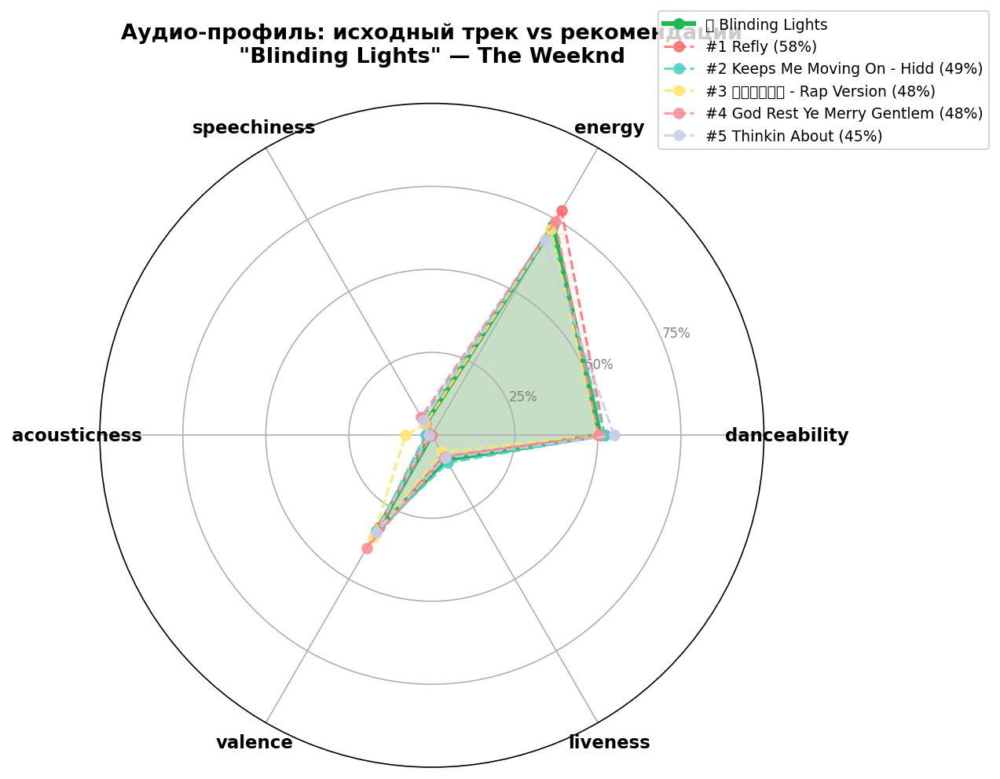
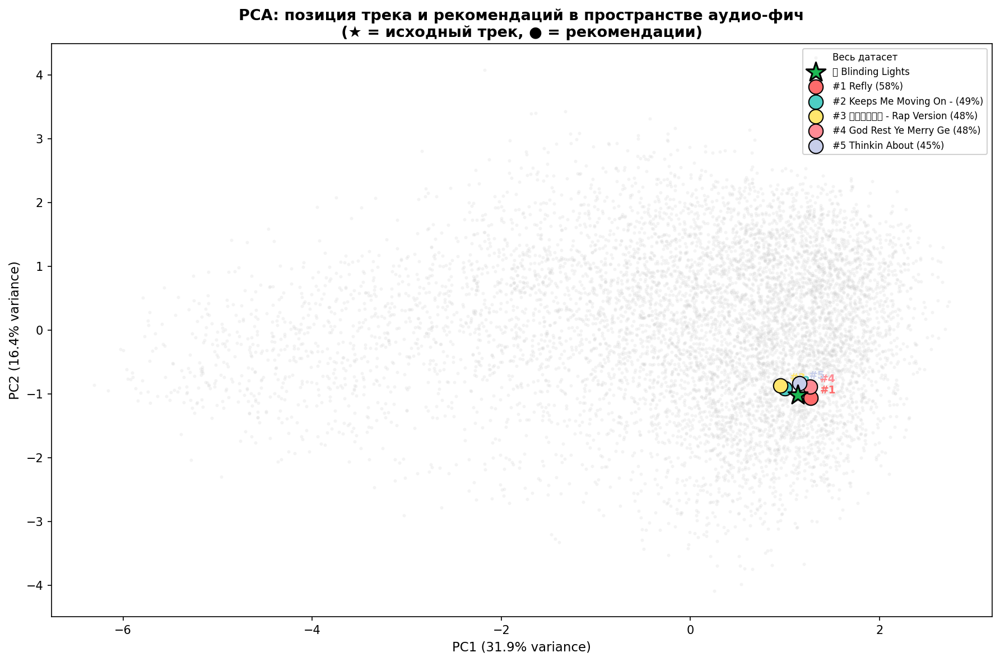
Вывод: рекомендации лежат в компактной окрестности seed-трека.
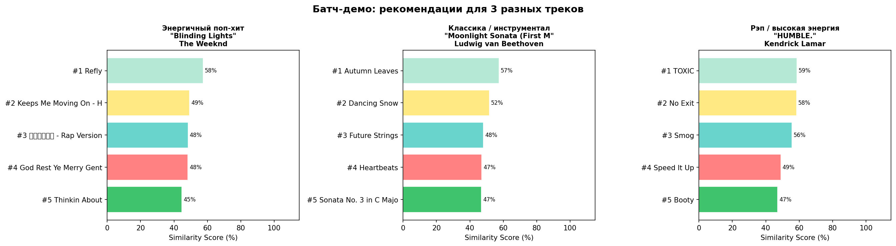
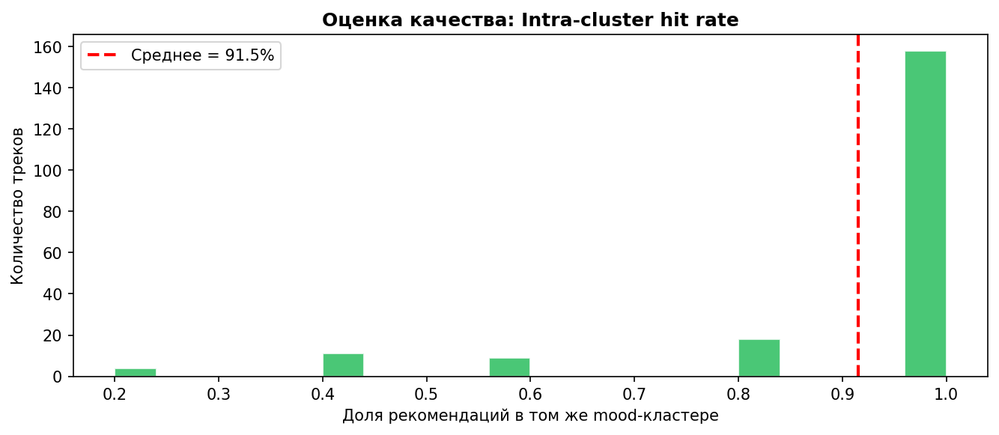
Результат: распределение сильно сдвинуто вправо \(\Rightarrow\) большинство рекомендаций сохраняют настроение
Настроение важнее жанра.
Аудио-признаки доминируют.
Музыкальные предпочтения изменяются во времени.
Стэкинг и калибровка вероятностей хорошо подходит для многожанровой классификации
| Инициатива | Источник | Ожидаемый эффект |
|---|---|---|
| Mood Selector в UI | Задача 1 | \(\uparrow\) session length, \(\downarrow\) skip rate |
| RecSys на KNN | Бонус | +2.35 п.п. completion rate |
| Классификация треков по жанрам | Задача 3 | Улучшение поиска и категоризации (можно использовать выход модели в качестве доп фичей) |
| Аналитика трендов для музыкальных авторов | Задача 1 + Задача 4 | Потенциальный доп поток выручки |
| Прогноз хитов среди треков | Задача 2 | Приоритезация инвестиций в треки/жанры/исполнителей |
| Мониторинг изменения предпочтений пользователей со временем | Задача 4 | Раннее обнаружение новых трендов |
Спасибо за внимание!